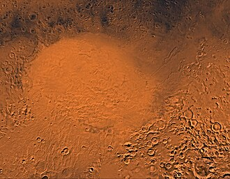

Mars as seen by Rosetta. Source
Mars is the fourth planet from the Sun and the second smallest in the Solar System.
Mars is named after the Roman god of war.
It is also known as the Red Planet, the name originating from its red surface.
The planet has a similar composition to that of Earth, but with a thinner atmosphere.
Mars features some of the largest geological structures in the Solar System like the highest known mountain - Olympus Mons (21,229 m) and the largest canyon Valles Marineris.
Craters are mostly concentrated in the south, where the surface is older, the biggest of which is Utopia, although the unconfirmed North Polar Basin is bigger.
There is ice on Mars, most of which is at the poles, with evidences showing that liquid water might have existed at one point on the Martian surface.
Currently no liquid water can remain on the surface, due to the low atmospheric pressure.
There are two satellites orbiting around Mars - Phobos and Deimos.
Mars has been visited by multiple spacecraft, the first success being NASA's Mariner 4.
Other countries have sent their missions, including the Soviet Union (and later Russia), Japan, China and the UAE.
European countries under ESA have also sent missions.
Only the USA, the Soviet Union and China have successfully sent a lander, although the soviet Mars 3 lost connection shortly after landing.
The first to name the planet were the Sumerians, giving it the name of the god of war and plague Nergal.
In Ancient Greece, the planet was known as "Pyroeis" (Πυρόεις), or "Areos aster" (Ἄρεως ἀστἡρ), after the Greek god of war Ares.
The modern Greek name is Ares (Άρης).
The Romans also named it after their god of war Mars.
In India the planet is called Mangala (मंगल), which is the god-personification of the planet.
In China and neighboring countries the planet is refered to as "fire star" (火星).
Orbit and rotation
Mars has an orbit with a semimajor axis of 1.524 AU and an eccentricity of 0.0934, second only to Mercury.
The planet orbits the Sun in 687 days.
The perihelion is 1.3814 AU and the aphelion is 1.666 AU.
The martian solar day (called sol) is 24 hours, 39 minutes, and 35.244 seconds.
The axial tilt is 25.19°, which is close to that of Earth and thus has similar seasons.
Mars, like the other planets in our solar system, formed approximately 4.6 billion years ago from the solar nebula - a rotating disk of gas and dust surrounding the Sun.
As material in this disk collided and consolidated, Mars gradually accreted into a planet, developing its differentiated internal structure.
During its early history, known as the Noachian Period (about 4.1 to 3.7 billion years ago), Mars was a much warmer and wetter world, with a thicker atmosphere that allowed liquid water to flow across its surface, carving out river valleys, lake beds, and possibly even a vast ocean in the northern lowlands.
This era also saw intense volcanic activity, which shaped massive features like the Tharsis region.
The oldest surviving surfaces from that period are heavily cratered.
Over time, however, Mars lost much of its atmosphere due to solar wind stripping and the cessation of its global magnetic field, leading to a dramatic climate shift.
By the Hesperian Period (3.7 to 3.0 billion years ago), the planet became colder and drier, though volcanic activity and sporadic water flow persisted.
This period was also marked by the formation of lava plains.
In the Amazonian Period (3.0 billion years ago to present), Mars evolved into the cold, arid desert we observe today, with water mostly locked away as ice or buried underground, and only occasional geological activity reshaping its surface.
This period exposed the North Polar Basin to impacts, which explains the scarcity of craters there.
Mars is approximately half Earth's diameter and is 15% its volume.
The surface gravity on Mars is approximately 1/3 of that on Earth.
Mars has an interior similar to that of Earth.
It is differentiated into a crust, a rocky mantle and a metallic core.
The crust contains mostly silicates, with common elements being (apart from silicon and oxygen) iron, magnesium and aluminum.
The iron(III) oxide (ferric oxide) gives Mars its red color.
The Martian mantle is solid and rocky, but is not divided like Earth's inner and outer mantle.
The core contains iron, nickel and sulfur.

True color satellite map of Mars

Olympus Mons, the tallest mountain on Mars
Mars is seismically active, but does not feature tectonic plates like Earth.
There are two major volcanic regions - Tharsis and Elysium.
Tharsis is a region, containing most of the volcanoes on Mars.
Tharsis Montes, a group of three mountains - Ascraeus Mons, Pavonis Mons and Arsia Mons - is located in the center of Tharsis.
Other prominent mountains are Alba Mons and Olympus Mons, which is the highest mountain known at 21,229 m above datum (Vesta's Rheasilvia might be taller, but the shape of the asteroid makes it hard to give an accurate elevation).
Elysium is located west of Tharsis, both separated by Amazonis Planitia.
The tallest mountain there is Elysium Mons at 14.1 km above the datum.
Other volcanoes in Elysium include Albor and Hecates Tholus.
Valles Marineris, named after Mariner 9, is a canyon east from Tharsis.
It is long 4,000 km, wide 200 km and deep 7 km, making it the biggest known canyon in the Solar System.
It stretches from Noctis Labyrinthus to the west and is comprised of several chasmata - Tithonium, Ius, Melas, Candor, Ophir, Coprates, Ganges, Capri and Eos.
It ends in an outflow channel in the Xanthe and Margaritifer Terrae, before emptying into the Chryse Planitia.
There are other nearby chasmata like Echus Chasma, which empties out through the Kasei Valles, and Hebes Chasmata, which is isolated from Echus.
Many theories exist on what might have caused these formations, like a tectonic rift, or erosion by liquid water.

Hellas Planitia seen by Viking
The Martian surface is heavily cratered, but most craters are located in the south.
The north contains interconnected low-lying plains like Arcadia Planitia, Acidalia Planitia and Utopia Planitia.
This suggests that these plains may have once been covered by a large Martian ocean.
Another big plain is Hellas Planitia, which is not connected to the other and is located in the south hemisphere.
This is where the lowest point on Mars is - Badwater Crater.
It is the largest impact crater on Mars, although the much larger Northern Polar Basin is suspected to also be one.
It is roughly antipodal to Alba Mons, either a coincidence, or the impact was the cause of the volcanic activity on the opposite side of the planet.
Other impact basins include Argyre Planitia, an antipode of Elysium, and Isidis Planitia, which is connected to Utopia Planitia and is antipodal to the Tharsis Montes.
Dark spots on Mars like Syrtis Major are albedo features significantly darker than the surrounding terrain.
The dark colors come from the basaltic volcanic rock of the regions and the relative lack of dust.

Clickable topographic map of Mars - Mars Global Surveyor
Water on Mars exists as ice and small quantities of vapor.
Liquid water can hardly form on Mars, where the atmospheric pressure is less than that on Earth.
The two biggest regions where water exists are the poles.
The South pole also has a permanent dry ice (solid carbon dioxide) cap.
Landforms, called outflow channels, migh have been formed by water.
Chryse Planitia is a plain, where many of those outflow channels are located like Ares Vallis, Tiu Vallis and Kasei Valles.
The northern hemisphere has a lower elevation and is less craterd, suggesting that an ocean might have covered the surface.
Atmosphere and climate
Mars does not have a magnetosphere and as a result has a very thin atmosphere, which is getting stripped away by solar winds and ionisationof particles.
The atmosphere consists of 96% carbon, 1.9% argon and 1.8% nitrogen, with trace amounts of oxygen, water vapors and carbon monoxide.
Despite the high amounts of carbon dioxide, the thin atmosphere does not trap as much heat as on Venus.
The temperatures range from −110 °C to 35 °C.
Dust storms on Mars are the largest in the Solar System.
They occur when Mars is close to the Sun.
Main article: Satellites of Mars
Mars has two natural satellites - Phobos and Deimos.
They are named after the Greek gods of fear and terror respectively.
Phobos is the bigger of the two and orbits closer to Mars.
Both are small irregularly-shaped bodies and it is believed that they originated from the asteroid belt.
Both satellites' orbits are near the equator.
Of the two, Phobos is the one orbiting closer to Mars.
Phobos and Deimos are irregularly-shaped satellites of Mars
Mars has been observed since ancient times.
The first to see Mars through a telescope was Galileo Galilei.
Cristiaan Huygens was the first to draw a map of Mars.
On 5 September 1877 the italian astronomer Giovanni Schiaparelli produced a detailed map of the Martian surface during a perihelic opposition.
By then telescopes were advanced enough to detect features on the surface.
Schiaparelli gave names to most of those features, many still in use.
One feature he noticed was channels on the martian surface.
Until early 20th century it was believed that those channels were real, but with the improvement of telescopes, these features couldn't be seen.
The channels were identified as an optical illusion.
Many missions were conducted, including flybys, orbiters, landers, rovers and even a helicopter.
The next milestones include sample return and crewed missions.
The Soviet Union were the first with a program to Mars.
NASA's Mariner 4 completed the first successful flyby, although the soviet Mars 1 lost communication before its flyby.
It also transmitted back to Earth the first images from another planet and disproving early theories about the Martian surface.
Mariner 9 was the first to orbit Mars, two weeks before the soviet Mars 2.
Mars 2 was successful at deploying an orbiter, but lander and rover crashed into the martian surface.
The next Mars mission was the first to make a soft land, but lost communication shortly after.
NASA's Viking 1 on the other hand landed and was operational for 2245 sols.
The last Soviet missions were the unsuccessful Phobos 1 and 2 missions.
Phobos 2 managed to reach a Phobos orbit, before it lost communications and failed to deploy a lander and a rover.

Mars 2020 mission - the rover Perseverance and the helicopter Ingenuity
NASA continued with the missions, launching Mars Global Surveyor in 1996 to collect data about the atmosphere and the surface.
Later that year, Mars Pathfinder was launched, which carried the rover Sojourner.
It was the first rover to operate on Mars.
Since then, NASA has sent four other rovers - Spirit, Opportunity, Curiosity and Perseverance.
The Mars 2020 mission, along with Perseverance, brough Ingenuity - a small robotic helicopter, which operated the first flight on Mars.
Other NASA missions include Mars Odyssey, which is still in operation orbiting Mars; MRO; Phoenix; MAVEN, and InSight, which studied various aspects like the geology, hydrology and atmosphere.
Since the fall of the Soviet Union, other agencies launched their own missions over the years.
Rosaviacosmos, later Roskosmos, launched two missions - Mars 96 and Phobos-Grunt, both unsuccessful.
The Japanese ISAS failed to send their Mars orbiter Nozomi.
ESA has two collaborative missions, both still in operation - Mars Express and ExoMars 2016 (in collaboration with Roskosmos).
The probe Rosetta used Mars gravity assist as a way to reach the comet 67P/Churyumov–Gerasimenko.
The Chinese CNSA has one mission (apart from the unsuccessful Yinghuo 1 that was part of Phobos-Grunt) to Mars - Tianwen-1.
This way China became the second to operate a rover on Mars with Zhurong.
ISRO - India's national space agency - was the fourth agency to send a spacecraft to Mars after NASA, the soviet space program and ESA.
The Mars orbiter Mangalyaan has the lowest cost of all the missions to Mars.
The Dubai-based MBRSC has one orbiter around Mars - Hope.
Future missions include JAXA's Martian Moons eXploration - a Phobos and Deimos sample return mission, NASA's low-cost EscaPADE orbiters, CNSA's Tianwen-3 - a Mars sample return mission, ESA's Rosalind Franklin rover, and ISRO's Mangalayaan-2 orbiter, lander, and rover.
Habitability and colonization
Mars does not have life forms, but might have done in the past.
Current missions of NASA are studying the surface for signs of life on Mars.
The next ExoMars mission by ESA (originally planned as a collaboration with Roscosmos) is planned to deploy the Rosalind Franklin rover, with the primary objetive to drill and collect samples for analysis.
The mission was postponed due to worsening relations due to Russia's ongoing invasion of Ukraine.
So far, the Mars 2020 mission that sent the Perseverance rover and the Ingenuity helicopter has lead to the most compelling arguments for life once existing on Mars.
The potential biosignature was collected from a sedimentary deposit in the Neretva Vallis near the Jezero Crater and is made of mostly silt and clay, which are excellent preservers of past microbial life.
The most interesting finding was the presence of the minerals vivianite and greigite, both of which could form from organic matter.
Plans for colonizing Mars were proposed multiple times.
NASA and CNSA both plan on sending people on Mars as early as the 2030s.
SpaceX, a privately held company, has proposed its own missions to Mars with the intent of colonizing and settling the planet.
External links
{% include catplanets.html %}


{kind=link}